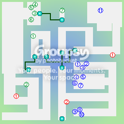
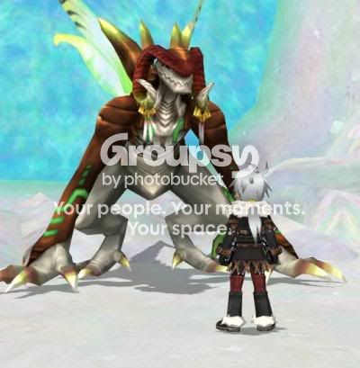
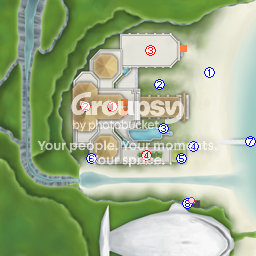
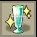
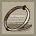

แก้ไขชื่อให้ถูกต้อง?ตามแพทช์ไทย วันที่ 24/2/53 เวลา 00.25 น. - 26/2/53 เวลา 21.27 น.
ขอเกริ่นไว้ก่อนว่า เท่าที่เข้าไปอ่านดูจะพบว่าการทำอาวุธเลเวล 99 จะต้องใช้ทุนทรัพย์และเวลาเป็นจำนวนมากในการเตรียมตัว
จึงขอทำการแปลมาเพื่อให้ผู้ที่ต้องการจะทำอาวุธเลเวล 99 ในวันที่ซาก้า 9 จะเข้ามา(ในวันไหนก็ไม่รู้ :P) ได้เตรียมตัวล่วงหน้ากันก่อนครับ
วิธีการทำอาวุธเลเวล 99
สิ่งที่ต้องเตรียมขั้นต่ำ : เงิน 5 ล้าน และ แต้ม 3,000 CP
สิ่งที่ต้องทราบ : เงินใน ECO town อยู่ในสกุล eCoin ซึ่งแลกได้ที่คาสิโนในอัตรา 100 g => 1 eCoin (แลกกลับไม่ได้)
คุณกำลังจะได้รับการอธิบายเกี่ยวกับอาวุธที่แข็งแกร่งที่สุดในโลก ECO, อาวุธเลเวล 99
เริ่มแรก สิ่งที่คุณจะต้องไปคุยคือ เอมิลดราก้อน ซึ่งอยู่ในส่วนที่ลึกที่สุดใน whale rock ดันเจี้ยน และอยู่ในส่วนที่ลึกที่สุดของ Abyss
โดยคุณจะสามารถรับเควสเลเวล 84 สู้กับเอมิลดราก้อนได้
ที่อยู่เอมิลดราก้อนอยู่เบอร์ 7 (สีเขียว) ของแม็พที่ชื่อ Abyss

แม็พ Abyss
emil dragon
เลเวล 113
HP 2,000,000
EXP 112,000/95,000
สกิล acid mist, earth cry, gravity fall, reflection wall
หลังจากที่ทำเควสสำเร็จจะได้ไอเท็ม Castus ให้เก็บไว้ก่อน (เป็นไอเท็มสำคัญสำหรับทำเควสอาวุธ)
ปล. เควสปราบเอมิลดราก้อนจำเป็นต้องทำ เพื่อที่จะสามารถปลดล็อคเควส 4 ฤดูได้
ขั้นตอนต่อมา จะต้องเก็บรวบรวมไอเท็มดังนี้
ไอเท็มจำเป็น
Castus
 Rainbow thread
Rainbow thread
 Dragon scale
Dragon scale
ไอเท็มเลือกได้ (เลือกมา 2 ชิ้นสำหรับผสมอาวุธเก่า - จะกล่าวในตอนหลัง)
 Medical Rifle
Medical Rifle
 Woven Stuff
Woven Stuff
Fantasy homula
ต่อไปจะเป็นขั้นตอนสำหรับวิธีหาไอเท็มข้างต้น ซึ่ง Castus เราได้มาจากการปราบเอมิลดราก้อนแล้ว ดังนั้นต่อไปจะเป็นการหา Rainbow thread
ขั้นตอนการหาไอเท็ม Rainbow thread

ใน ECO town, สามารถซื้อ Rainbow pieces ได้ง่ายๆที่ NPC Huka (อยู่ที่เบอร์ 2 สีแดง)
ปล. การจะคุยกับ NPC ตัวนี้ได้ต้องผ่านเควสปราบเอมิลดราก้อนมาก่อน
สนนราคา 10,000 eCoin ต่อชิ้น ( 1M gold
 )
)
 NPC Huka
NPC Huka
จากนั้นให้ไปที่พื้นที่แรกของแม็พ Abyss และคุยกับ NPC Rowan (เบอร์ 9 สีน้ำเงิน) ซึ่งเป็นเขตฤดูใบไม้ร่วง จะสามารถเปลี่ยน Rainbow pieces เป็น Rainbow thread ได้
ปล. การจะคุยกับ NPC ตัวนี้ได้ต้องผ่านเควสปราบเอมิลดราก้อนมาก่อน
=>
แน่นอน ค่าใช้จ่ายในการทำ 10,000 eCoin (อีก 1M สินะ)
สรุปว่าการจะได้รับไอเท็ม Rainbow thread มาจะต้องเสียค่าใช้จ่าย 20,000 eCoin (2M gold)
ขั้นตอนการหาไอเท็ม Dragon scale
ไปที่เมือง west forte โลกโดมิเนียน ซื้อกับ NPC Doga (อยู่หลังประตูใหญ่ ชื่อ Wholesale store เลือกหัวข้อขายของจะมีให้เลือก)

ซื้อในวัีนที่ราคาถูกที่สุดจะซื้อได้ในราคา 3,000 CP
(OD war 1 รอบ)

ปล.ไม่จำเป็นต้องทำเควสปราบเอมิลดราก้อนมาก่อน สามารถซื้อได้ตามปกติ
ขั้นตอนการหาไอเท็ม Medical Rifle
ไปที่พื้นที่แรกของแม็พ Abyss และคุยกับ NPC Lewis (เบอร์ 1 สีน้ำเงิน) ซึ่งเป็นเขตฤดูใบไม้ผลิ
ปล. การจะคุยกับ NPC ตัวนี้ได้ต้องผ่านเควสปราบเอมิลดราก้อนมาก่อน
เควสส่ง throat candy 10 ชิ้น จะได้รางวัลตอบแทนเป็น Medical Rifle 1 ชิ้น
 x10 ชิ้น => x1 ชิ้น (ใช้แต้มเควส 1 แต้ม)
x10 ชิ้น => x1 ชิ้น (ใช้แต้มเควส 1 แต้ม)
ขั้นตอนการหาไอเท็ม Woven Stuff
ไปที่พื้นที่แรกของแม็พ Abyss และคุยกับ NPC Clare (เบอร์ 4 สีน้ำเงิน) ซึ่งเป็นเขตฤดูร้อน
ปล. การจะคุยกับ NPC ตัวนี้ได้ต้องผ่านเควสปราบเอมิลดราก้อนมาก่อน
เควสส่ง Droped item1 10 ชิ้น จะได้รางวัลตอบแทนเป็น Woven Stuff 1 ชิ้น

x10 ชิ้น =>x1 ชิ้น (ใช้แต้มเควส 1 แต้ม)
รายชื่อมอนสเตอร์ที่ดรอปไอเท็มทั้ง 2 จะอยู่ใน Whale rock ดันเจี้ยน ดังนี้
- โค้ด: เลือกทั้งหมด
+--------------------------------------------------+
I ชื่อมอนสเตอร์ I O = ดรอป , X = ไม่ดรอป I
I I==================================I
I I Droped item1 I throat candy I
I==================================================I
I กลุ่ม Armor I O I O I
I Alcey (black) I I I
I==================================================I
I กลุ่ม Jangdok I I I
I กลุ่ม Alraune I O I X I
I กลุ่ม Cyclone I I I
I==================================================I
I กลุ่ม Butterfly I X I O I
I กลุ่ม Poc Poc I I I
+--------------------------------------------------+
ขั้นตอนการหาไอเท็ม Fantasy homula
ไปที่พื้นที่แรกของแม็พ Abyss และคุยกับ NPC Call (เบอร์ 7 สีน้ำเงิน) ซึ่งเป็นเขตฤดูหนาว
ปล. การจะคุยกับ NPC ตัวนี้ได้ต้องผ่านเควสปราบเอมิลดราก้อนมาก่อน
เควสขนส่ง Dominion string 1 ชิ้น
เมื่อได้รับเควสแล้วให้ไปคุยกับ NPC Eric ที่ Sky tower จะได้รับ Dominion string(Quest item) มา (capacity 100) จากนั้นก็เอาไปส่งโดย

x1 ชิ้น => x1 ชิ้น (ใช้แต้มเควส 1 แต้ม)ตอนนี้ไอเท็ม dominion string ในไทยมีชื่อว่า Used item สามารถเทรดกันได้และรับได้ไม่จำกัดใน 1 รอบ น้ำหนักและ capa ก็แค่ 1 ซึ่งคาดว่าจะเป็นบั๊ค(ที่ดี) และไม่มีผลกระทบกับการทำเควสแต่อย่างใด
ขั้นตอนการสร้างอาวุธเก่า
ต้องใช้ไอเท็มจำเป็นทั้ง 3 ชิ้น และไอเท็มเลือกได้ 2 ชิ้นที่กล่าวไว้ข้างต้น ไปให้ NPC Hagan ซึ่งอยู่ในพื้นที่ที่ 3 ของแม็พ Abyss (เบอร์ 1 สีเขียว)

ไอเท็มจำเป็น
ไอเท็มเลือกได้
จากไอเท็มเลือกได้ 2 ชิ้นข้างต้น เมื่อทำการจ่าย eCoin ไปแล้ว จะสามารถได้อาวุธเก่ามา โดยค่าใช้จ่ายในการทำคือ 20,000 eCoin (อีก 2M gold!!!!)
ปล. การจะคุยกับ NPC ตัวนี้ได้ต้องผ่านเควสปราบเอมิลดราก้อนมาก่อน + รวบรวมไอเท็มมาครบ + เตรียมเงินมาครบ
สำหรับตารางการผสมไอเท็ม 2 ชิ้น เพื่อให้ได้อาวุธเก่าชนิดไหนให้ดูข้างล่าง (แรนด้อม 1/3)
+ => ค้อน 2 มือ, สนับมือ, ปืนไรเฟิล
+ => อาวุธขว้าง, มีดสั้น, ดาบมือเดียว (ถ้าได้อาวุธขว้างก็เหมือนเอาเงิน 4 ล้านไปละลายทิ้ง )
+ => ขวานมือดียว, ปืนสั้น, ดาบมือเดียว (rapier)
+ => ธนู, แส้, ขวาน 2 มือ
+ => ค้อนมือเดียว, ครอสโบว์, คทาเวทย์
+ => กีต้าร์, หนังสือเวทย์, ไพ่ (ถ้าได้ไพ่ก็เหมือนเอาเงิน 4 ล้านไปละลายทิ้ง
เป็นพระต้องเสี่ยงสินะ)
คำเตือน : ขณะนี้มีบั๊คจากที่ควรได้หนังสือเวทย์ 99 กลายเป็น หนังสือพ่อค้า 90 แทน
และกีต้าร์ 99 ก็มี stat เท่าพิณ 90 อีกทั้งยังเป็นแค่กีต้าร์เลเวล 90 ด้วย วันที่ 24/2/53 5.14น.
เพิ่มเติม : ไพ่ 99 มี stat เท่า ไพ่ 90 และสามารถใส่ได้ตั้งแต่เลเวล 90
เพิ่มเติม : คทาเวทย์ 99 กลายเป็น คทา เลเวล 1 ทนทาน 1 stat 1 ทุกอย่าง วันที่ 26/2/53 22.36 น.
ขั้นตอนการปลดปล่อยอาวุธเก่า
ปกติจะยังไม่สามารถสวมใส่ได้เมือ่ยังเป็นอาวุธเก่าอยู่
จะต้องไปทำการปลดปล่อยกับเอมิลดราก้อนก่อน
เมื่อไปคุยกับเอมิลดราก้อนขณะที่มีอาวุธเก่าอยู่กับตัว
จะสามารถปลดปล่อยอาวุธเก่าให้ใช้งานได้เมื่อทำการจ่าย eCoin ไป
ค่าใช้จ่ายเท่ากับ 10,000 eCoin (1M gold)
ปล.ไม่สามารถเริ่ม event นี้ได้ถ้าไม่ได้ปราบเอมิลดราก้อนมาก่อน
ยินดีด้วย ท่านได้อาวุธ 99 ในครอบครองแล้ว
แต่เอ๊ะ! แล้วดาบ 2 มือ, หอกมือเดียว กับหอก 2 มือล่ะ!
ขั้นตอนการปลดปล่อยอาวุธเก่าที่แท้จริง
แน่นอนว่าอาวุธเก่าที่สร้างจาก NPC Hagan สามารถปลดปล่อยได้ด้วยการจ่ายเงิน
แต่สำหรับอาวุธเก่าที่ต้องใช้ CP แลกมากับ NPC Doga ในราคา 15,000 CP นั้นยังต้องมีขั้นตอนในการปลดปล่อยเพิ่มอยู่
อาวุธทั้ง 3 ชิ้น ได้แก่ ดาบ 2 มือ, หอกมือเดียว, หอก 2 มือ
เมือ่คุยกับเอมิลดราก้อนขณะที่มีอาวุธทั้ง 3 ชิ้นข้างต้นอยู่กับตัว จะสามารถทำการสู้กับ serious เอมิลดราก้อนได้ (แปลว่าไงดี -*- เอมิลดราก้อนเอาจริง??)
ปล.ไม่สามารถเริ่ม event นี้ได้ถ้าไม่เคยทำการปลดปล่อยอาวุธอื่นๆมาก่อนอย่างน้อย 1 ครั้ง(แบบจ่ายเงิน)

serious emil dragon
เลเวล 250
HP 4,000,000
EXP 2,000,000/2,500,000
สกิล earth cry, gravity fall, reflection, anima drain, Howling squeezer, Follower summons
ลูกน้อง

Arurun
สกิล Howl out, リストリクトリバース, リジェネーション
เมื่อทำเควสสำเร็จก็จะสามารถปลดปล่อยอาวุธได้สำเร็จเช่นกัน
คำเตือน : ขณะนี้มีบั๊คหอกมือเดียว 99 มี stat เท่า หอกมือเดียว 90
และบั๊คการแสดงผลของดาบ 2 มือ 99 ที่แสดงผลเหมือน ดาบ 2 มือ 99 แบบ repica อีกทั้ง stat และ ทนทาน ผิดปรกติ จากทนทาน 15 stat 99/99/99 ควรจะเป็น ทนทาน 35 stat 56/124/70
credit :
http://magical9.hp.infoseek.co.jp/99Weapon.html สำหรับต้นแบบในการแปล
http://ec.gamedb.info/wiki/Quest/ECOtow ... apons.html สำหรับข้อมูลปลีกย่อยอื่นๆที่เพิ่มเติม
http://ecologie.sakura.ne.jp/map/ สำหรับรูปแผนที่
http://www.google.com/language_tools?hl=en สำหรับการช่วยแปล
http://babelfish.yahoo.com/ สำหรับการช่วยแปลเช่นกัน
จบแล้ววววววว

ไปหาเงินกันเถอะทุกคน (งานนี้มีจนแน่ๆ)
ปล.ใครมีแต้ม CP เยอะก็อย่าพึ่งถลุงกันเพลินเน่อ